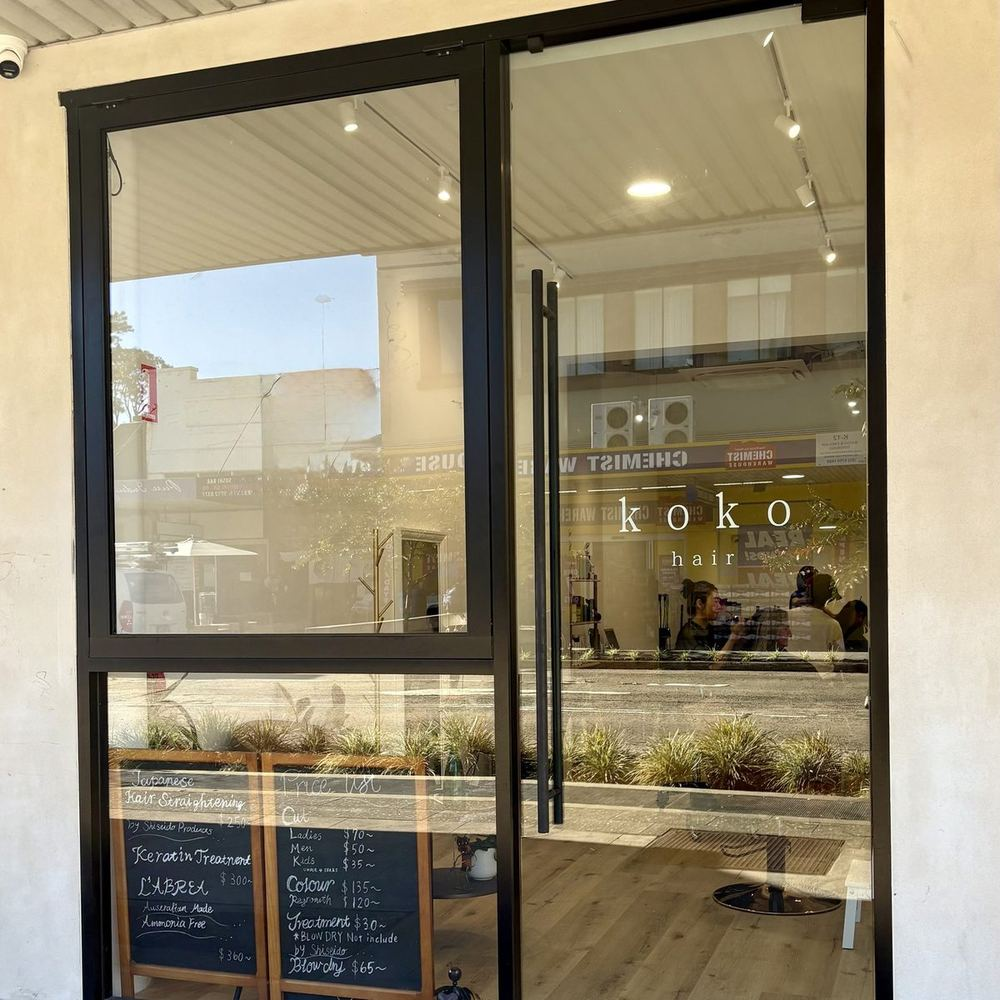
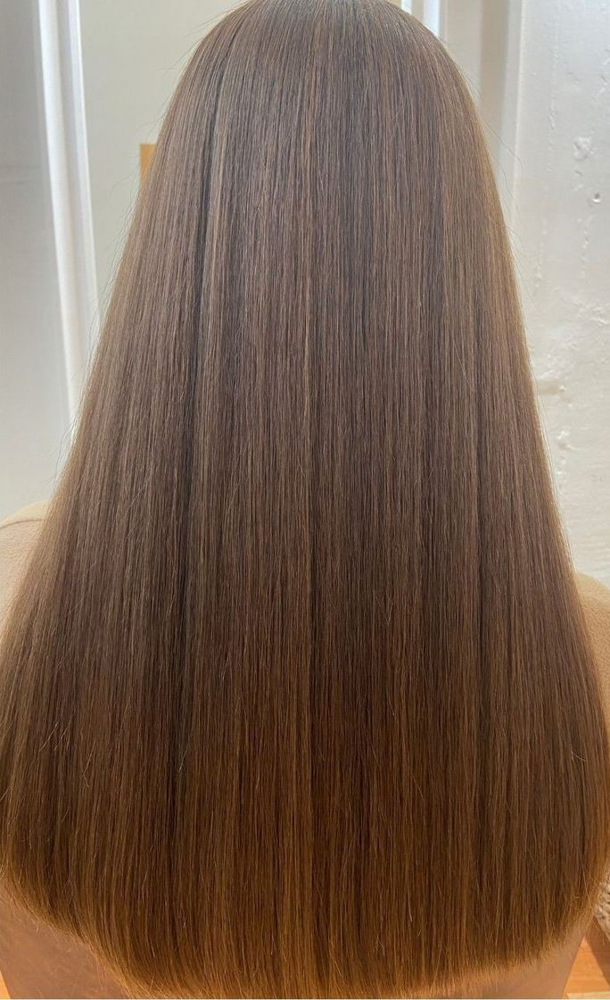
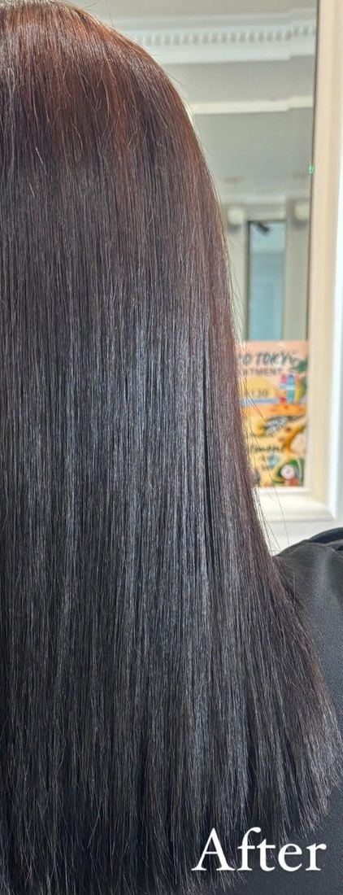
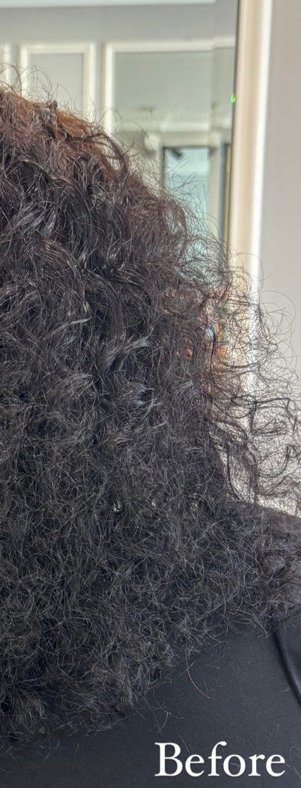
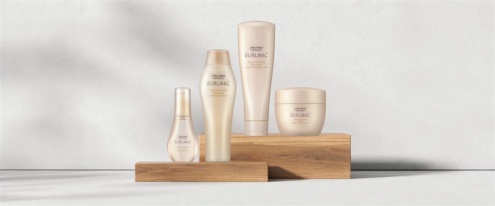
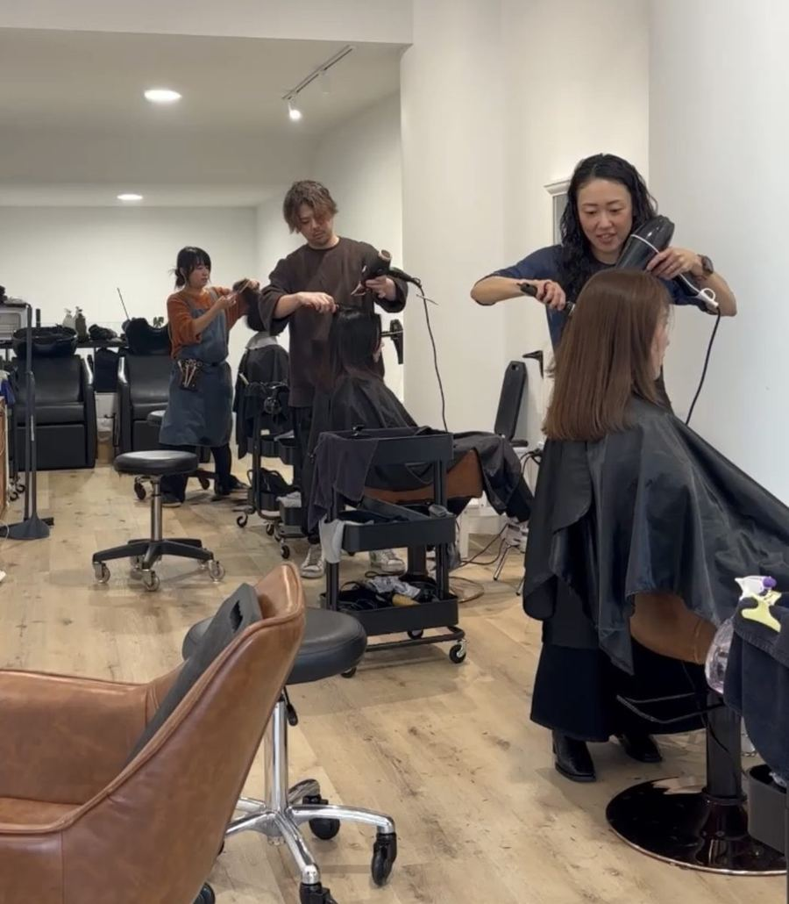

Japanese hair salons · Sydney
Stylists trained in Japan,
at two salons in Sydney.
We listen carefully, work with a personal touch, and make sure you leave looking your best.
Our salons
Which one is closer to you?

- Address
- Parking
A 5% surcharge applies on weekends and public holidays. The service menu and prices are on the booking page.
Japanese straightening
SHISEIDO Japanese straightening is what we are known for.
With high-quality SHISEIDO products, and skill and experience learnt in Japan.

BeforeAfter←Drag across the photo→


How long will the straightening last?
SHISEIDO straightening is permanent. As new hair grows it will need a retouch, usually after six months. To avoid damage, it is not necessary to straighten the whole head every time.
Bleached, highlighted or damaged hair?
Make an appointment or just pop in to the salon. We are happy to look at your hair and talk it through.

Sublimic Hair Repair Treatment by SHISEIDO
Repair your hair from the inside.
Sublimic is not a coating treatment. It works deep inside the hair structure.
- Dry and damaged hair
- Frizz and lack of shine
- Damage from colouring or straightening
- Hair that feels rough or weak
“After 24 years as a hairdresser, this is the best treatment I’ve ever worked with.”
Koji, salon owner
Sublimic treatment$190
Go to the booking page →
Choose a salon and book online.
The service menu and prices are on the booking page. For any questions, please call the salon.
- Five Dock0403 663 796
- Neutral Bay0432 368 872